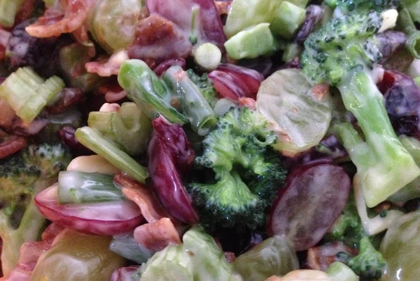

Spring Salad Recipe

People are surprised that this Spring Salad tastes so good with its combination of ingredients. It is indeed a very good salad.
Ingredients
- 12 slices of bacon
- 2 heads of fresh broccoli, florets only
- 1 cup chopped celery
- 1/2 cup chopped green onions
- 1 cup seedless red grapes
- 1 cup mayonnaise
- 1 tablespoon white wine vinegar
Steps
- Place bacon in a large, deep skillet. Cook over medium high heat until evenly brown. Drain, crumble and set aside.
- In a large salad bowl, toss together the bacon, broccoli, celery, green onions, green grapes, red grapes, raisins and almonds.
- Whisk together the mayonnaise, vinegar, and sugar. Pour dressing over salad and toss to coat. Refrigerate until ready to serve.